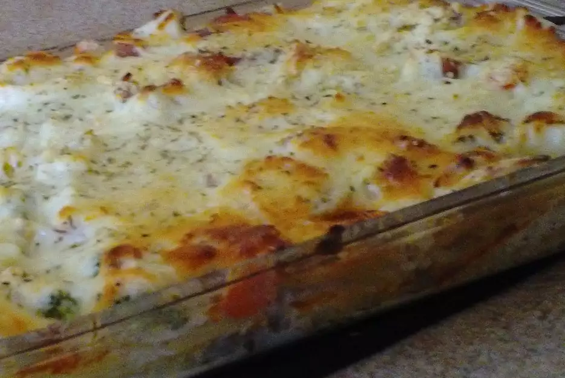

lasagna3

Description
I thought this was a really good dish. We were looking for something a little different for Tex-Mex and this was perfect. I did add about double the lime juice and we didn’t have sour cream so I subbed Mascarpone and Greek Yogurt but it still turned out really good. I love sauce so I doubled it and did a two layer lasagna. Thanks for the recipe!
Ingredients
- 4 boneless skinless chicken breasts, cut into 1/4-inch strips
- ½ cup lime juice
- 2 (1 ounce) packets taco seasoning mix (such as Old El Paso®)
- 1½ cups shredded mozzarella cheese, divided
- 1 cup sour cream
- 1 cup salsa
- salt and ground black pepper to taste
- 1 (8 ounce) package no-boil lasagna noodles, or to taste
Steps
- Combine chicken, lime juice, and taco seasoning in a large bowl. Stir to make sure chicken is evenly covered.
- Cook chicken mixture over medium heat until firm, about 15 minutes.
- Mix 1/2 cup mozzarella cheese, sour cream, and salsa in a bowl. Season with salt and pepper
- Put a few spoonfuls of the sour cream mixture in the bottom of a 9x9-inch baking dish. Layer noodles and chicken on top. Cover with remaining 1 cup mozzarella cheese.
- Bake in the preheated oven until noodles are tender and cheese is melted, about 1 hour.